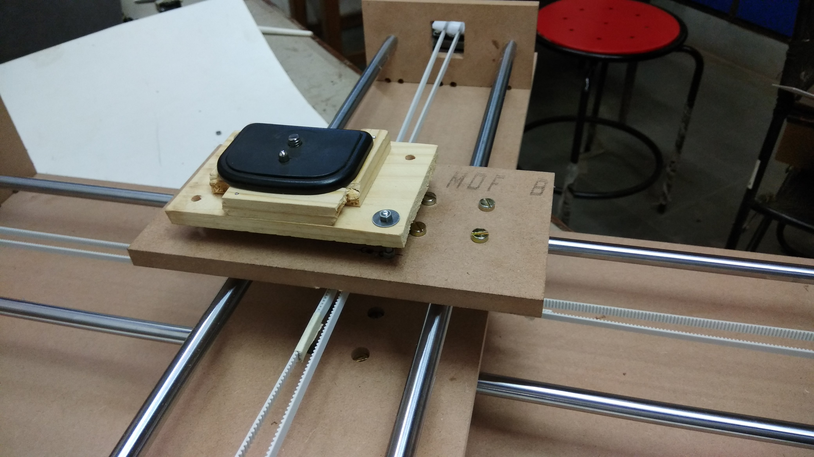
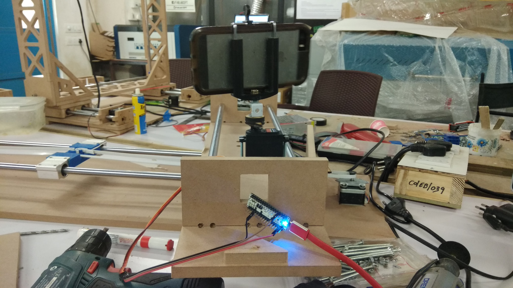

Fab Academy Tutorials & References
Assignment
Group Assignment ( Mechanical Design )
- design a machine (mechanism+automation), including the end effector build the passive parts and operate it manually
- document the group project and your individual contribution
Group Assignment ( Machine Design )
- automate your machine
- document the group project and your individual contribution.
FAB Lab CEPT page for Machine Design Week
Link to FabLab CEPT Project Page

http://archive.fabacademy.org/archives/2017/fablabcept/dslr_rig.html
Content
Working on selection for MTM
- Started with looking project on MTM which have different projects on it.
Machine That Make http://mtm.cba.mit.edu/ - All basic learning points are given in Archive link
http://academy.cba.mit.edu/classes/mechanical_design/index.html
http://academy.cba.mit.edu/classes/machine_design/index.html
We came up on decision for making Camera Dolly after seeing Videos of Edelkrone
Work Load distribution
Our team was of four members with set of different skills set.Gautam Prakash | Ashsih Tiwari | Avishek Das | Dhruv Saidava (me)
- Design and Tooling : Avishek & Ashish
- Purchase and Electronics : Gautam & Dhruv
In Ahmedabad we have industrial market and Gandhinagar near by City is having Electronics based industries from were all material was purchased.
Design for Holding Belt was 3D printed but to get proper tension on belt so it get grip with motor was not achieved with this design.
3D Printed Part was going to act as mount base for Camera. so it was required to be smoothly guided on steal rod.
Later on I Designed a MDF sheet and manually Drilled holes and used fasteners with washer so it create adjustment for changing tension and fixing belt. I
Design of belt holding was 3D Printed but that was very small and hard to adjust tension on belt.
After trying it one belt holding part braked. and grip was not that fine.

Attempt 2
By using fastners ( Bot , Nut and Washer) having liner cut in to platform it can be adjusted and belt can fixed with help of cable tie.
this prototype worked.

Camera holder was required which I created with wood.

By help of Servo and Arduino Mirco I checked primary movement of servo with Mobile Phone Holder.
Design
All started with checking out previous year projects on fab academy.
Files